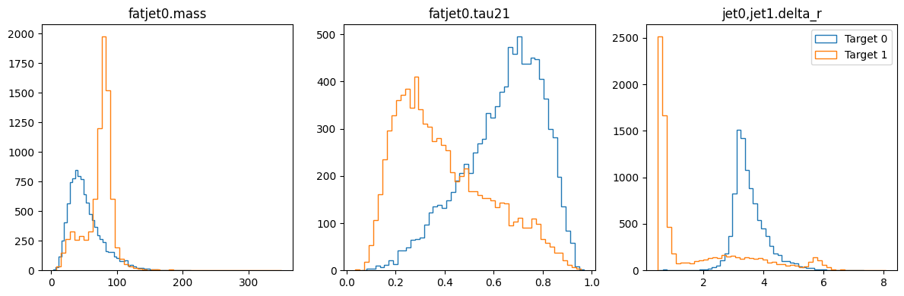

Create datasets#
This guide demonstrates how to use observable parsing system to create a dataset for future use. With this system, you can create and use observables not only with specific classes but also with simple strings.
Start by importing the necessary modules:
import uproot
from hml.generators import Madgraph5
from hml.representations import Image
from hml.datasets import SetDataset, ImageDataset
from hml.approaches import Cut
Load generated events#
As the previous guide showed, HML can handle two cases. Here, we use the Madgraph5 class to fetch runs from the output directory:
sig = Madgraph5.from_output("data/pp2wz@10k", "mg5_aMC")
bkg = Madgraph5.from_output("data/pp2jj@10k", "mg5_aMC")
sig_events = uproot.open(sig.runs[0].events()[0])
bkg_events = uproot.open(bkg.runs[0].events()[0])
Preselection#
For the processes, we choose three observables: mass and n-subjettiness ratio of the leading fat jet, and the angular distance between the leading and subleading jets. To ensure we can obtain the observables without missing value, it’s necessary to preselect or filter events based on the number of fat jets and jets:
preselection = Cut("fatjet.size > 0 and jet.size > 1")
preselection.read(sig_events)
preselection.value
fatjet.sizeis the observableSizeassociated with the physics objectfatjet. This observable refers to the number of the objects. In a root file, it applies to an entire branch. The physics object corresponds to the branch name (case-insensitive).- An observable is always linked to one or more physics objects. This concept inspires HML to create its own observable parsing system:
<physics_object>,<another>.<observable>. Thephysics_objectis any branch defined in your root file. Multiple objects are separated by,. For a single object, specify the index directly after the object name, e.g., "jet0", "muon1".
To extract the observable values, use the read method, which returns a boolean list. The value attribute stores the result.
Create a set dataset#
Now, we use the 1D data container SetDataset to hold these three observables for all events:
cut = "fatjet.size > 0 and jet.size > 1"
set_ds = SetDataset(["fatjet0.mass", "fatjet0.tau21", "jet0,jet1.delta_r"])
set_ds.read(sig_events, 1, [cut])
set_ds.read(bkg_events, 0, [cut])
To confirm our choice of observables is powerful enough to differentiate the signal and background, we use show to plot three distributions:

Right before saving the dataset to the disk, we use the split method to divide the dataset into training and testing sets:
set_ds.split(0.7, 0.3, seed=42)
print(set_ds.train.samples.shape)
print(set_ds.train.targets.shape)
set_ds.save("data/wjj_vs_qcd_set.ds")
The split method also supports the validation set: set_ds.split(0.7, 0.2, 0.1).
Create an image dataset#
Besides a set dataset, we can also represent each event as an image and then create a dataset of these images.
image_ds = ImageDataset(
Image(
height="fatjet0.constituents.phi",
width="fatjet0.constituents.eta",
channel="fatjet0.constituents.pt",
)
.with_subjets("fatjet0.constituents", "kt", 0.3, 0)
.translate(origin="SubJet0")
.rotate(axis="SubJet1", orientation=-90)
.pixelate(size=(33, 33), range=[(-1.6, 1.6), (-1.6, 1.6)])
)
- The
Imageclass is a representation of the image. It takes three arguments:height,width, andchannel. Theheightandwidthare the observables for the y-axis and x-axis, respectively. Thechannelis the observable for the pixel intensity. - The
with_subjetsmethod adds subjets to the image. - The
translatemethod moves the origin of the image to the subjet. - The
rotatemethod rotates the image. - The
pixelatemethod pixelates the image. This step makes the points discrete and produce the real image.
To create the image dataset, we still use the read method:
#--------------------------------------------------------------------------
# FastJet release 3.4.1
# M. Cacciari, G.P. Salam and G. Soyez
# A software package for jet finding and analysis at colliders
# http://fastjet.fr
#
# Please cite EPJC72(2012)1896 [arXiv:1111.6097] if you use this package
# for scientific work and optionally PLB641(2006)57 [hep-ph/0512210].
#
# FastJet is provided without warranty under the GNU GPL v2 or higher.
# It uses T. Chan's closest pair algorithm, S. Fortune's Voronoi code,
# CGAL and 3rd party plugin jet algorithms. See COPYING file for details.
#--------------------------------------------------------------------------
To visualize the images, there is also a show method:
image_ds.show(norm="log", target=0, show_pixels=True)
image_ds.show(norm="log", target=1, show_pixels=True)
Finally, we split and save the dataset:
Check the doc to learn more about observables, representations and datasets.